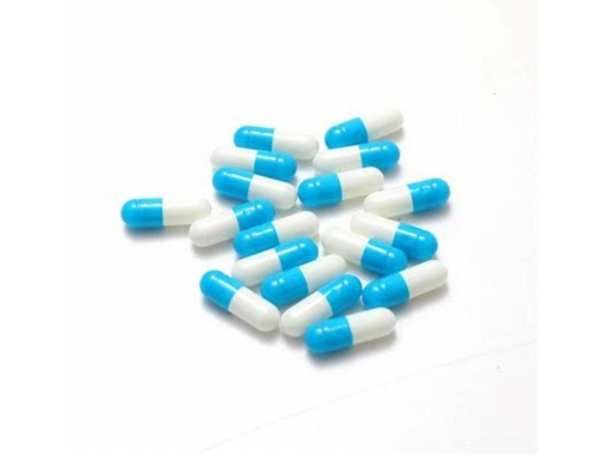
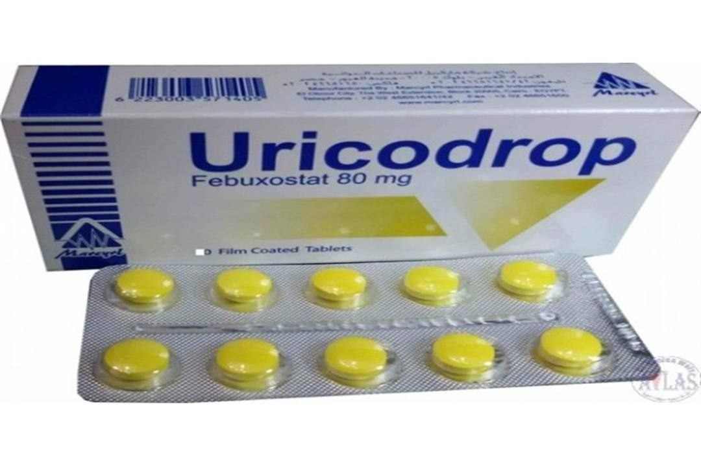
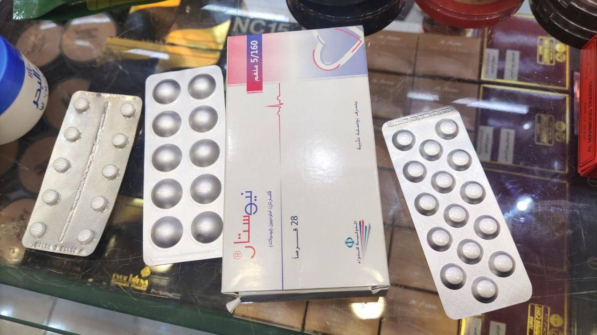
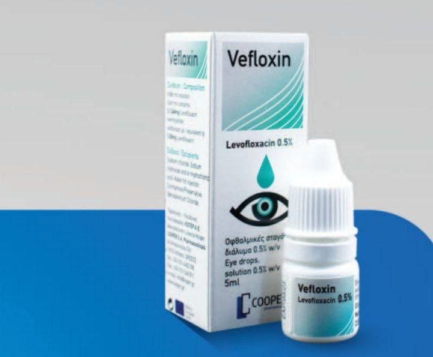
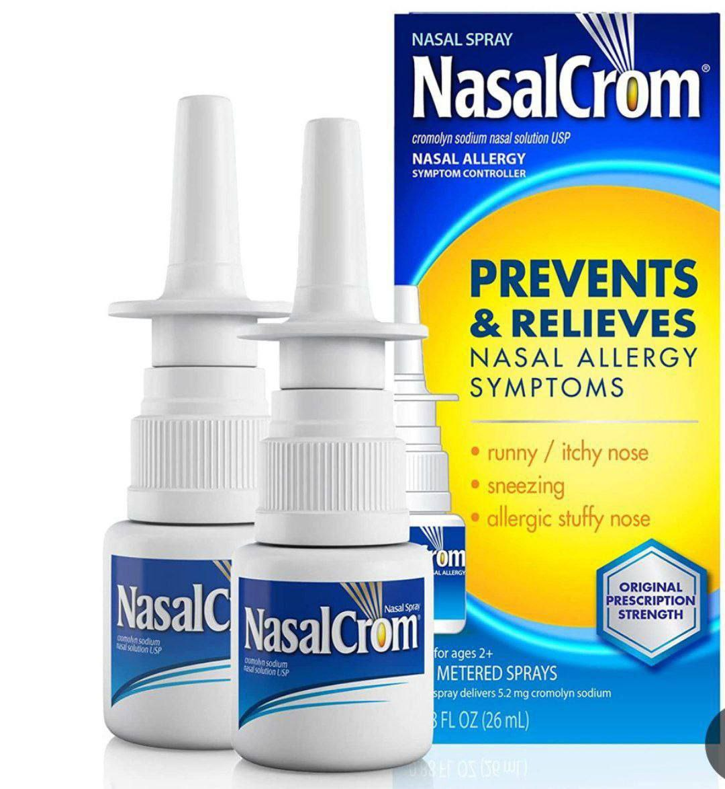
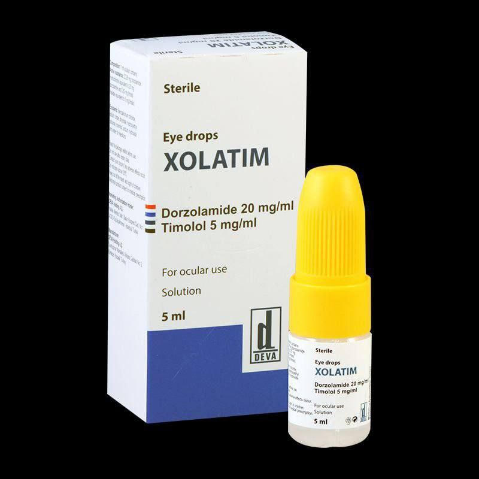
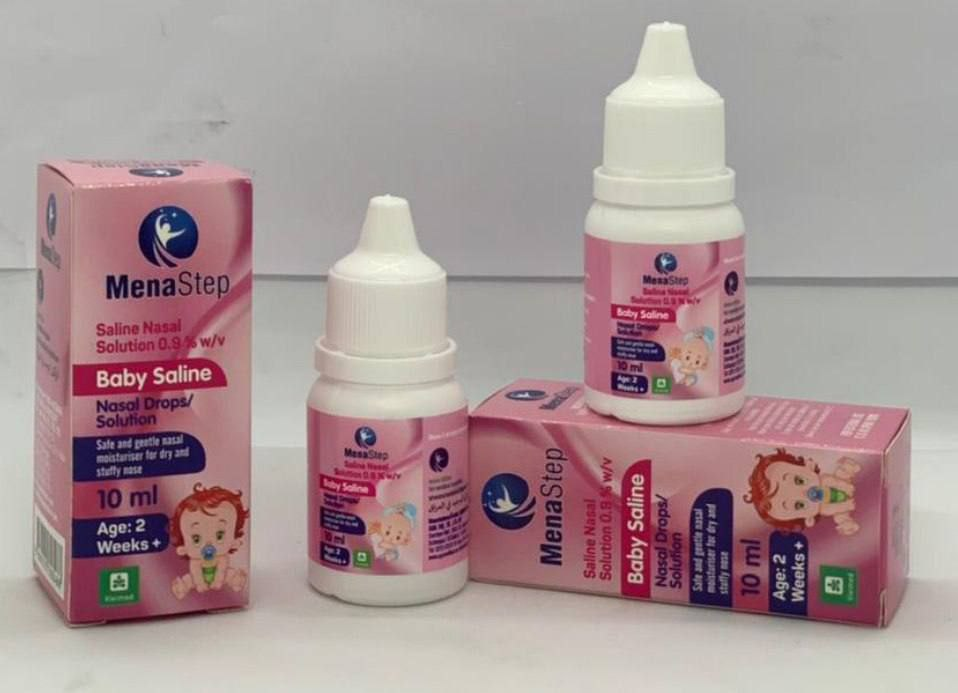

أهلاً وسهلاً بكم في صيدليتنا. نحن هنا لنقدم لكم أفضل خدمات الرعاية الصحية المتاحة. إذا كنتم تبحثون عن الأدوية، أو نصائح صحية، أو الرعاية الصحية، فنحن جاهزون لتقديم المساعدة. نحرص على توفير أجواء سليمة وآمنة. نحن هنا من أجل سلامتكم.
تقدم صيدلية الشفاء مجموعة واسعة من الحبوب لعلاج العديد من الأمراض والحالات الصحية. تشمل هذه الحبوب أدوية لعلاج الألم، والالتهابات، والأمراض المزمنة مثل السكري وارتفاع ضغط الدم وكافة الامراض الاخرى . نحن نختار منتجات عالية الجودة من أفضل الشركات المصنعة، ونتأكد من توفر خيارات تتناسب مع احتياجاتكم المختلفة. كما نقدم نصائح متخصصة حول كيفية استخدام الحبوب بشكل آمن وفعال، بالإضافة إلى معلومات عن الآثار الجانبية المحتملة. هدفنا هو مساعدتكم في اتخاذ قرارات صحية لسلامتك وراحتك.
  تقدم صيدلية الشفاء مجموعة متنوعة من القطرات لعلاج مختلف الحالات. سواء كانت قطرات للعين أو الأنف، نحن نضمن لكم منتجات ذات جودة عالية وسعر مناسب وآمنة.
   